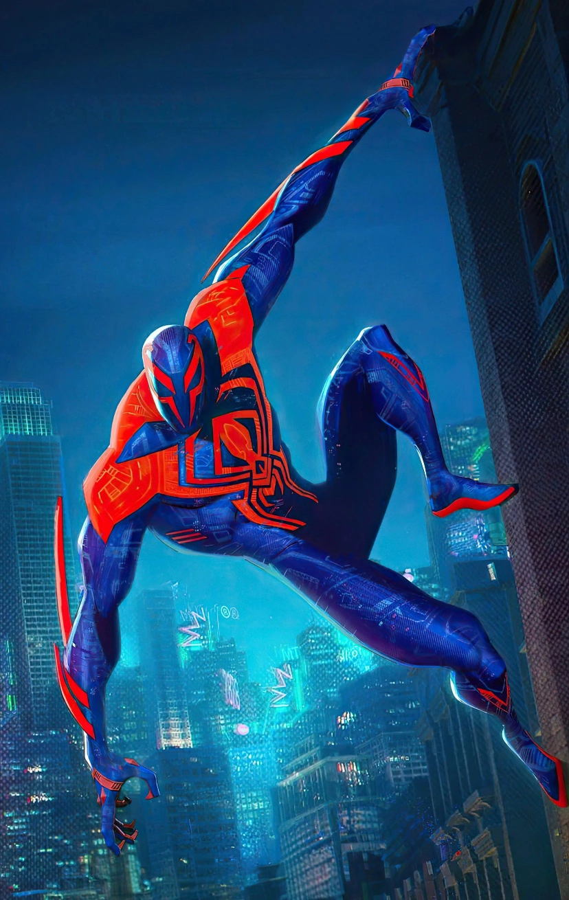

SPIDER-VERSE
Daftar Spider-Man dalam Multiverse dan Statistiknya
11-S8/30/Nicholas Benjamin Nayottama Kumoro

Spider-Man 2099
Spider-Man 2099 adalah sosok superhero Marvel dari masa depan (Earth-928) bernama Miguel O'Hara, seorang ahli genetika yang secara tidak sengaja menggabungkan DNA-nya dengan laba-laba.

Spider-Punk
Spider-Punk, yang bernama asli Hobart "Hobie" Brown dari Earth-138, adalah versi Spider-Man yang radikal, anarkis, dan bergaya punk rock.

Arachknight
Arachknight adalah karakter fusi dalam komik Marvel (Warp World) yang menggabungkan Spider-Man (Peter Parker) dan Moon Knight (Marc Spector)

Spider-Man Miles Morales
Miles Morales adalah salah satu inkarnasi Spider-Man yang paling populer, seorang remaja Brooklyn keturunan Afrika-Amerika dan Puerto Riko yang mendapatkan kekuatan laba-laba radioaktif.

Scarlet Spider
Scarlet Spider adalah identitas superhero yang utamanya digunakan oleh Ben Reilly, klon genetik dari Peter Parker/Spider-Man di Marvel Comics

Spider Noir
Spider-Man Noir adalah varian Spider-Man versi detektif swasta tahun 1930-an yang hidup di tengah masa Depresi Besar New York, seringkali digambarkan dengan nuansa kelam, hitam-putih, dan pragmatis.